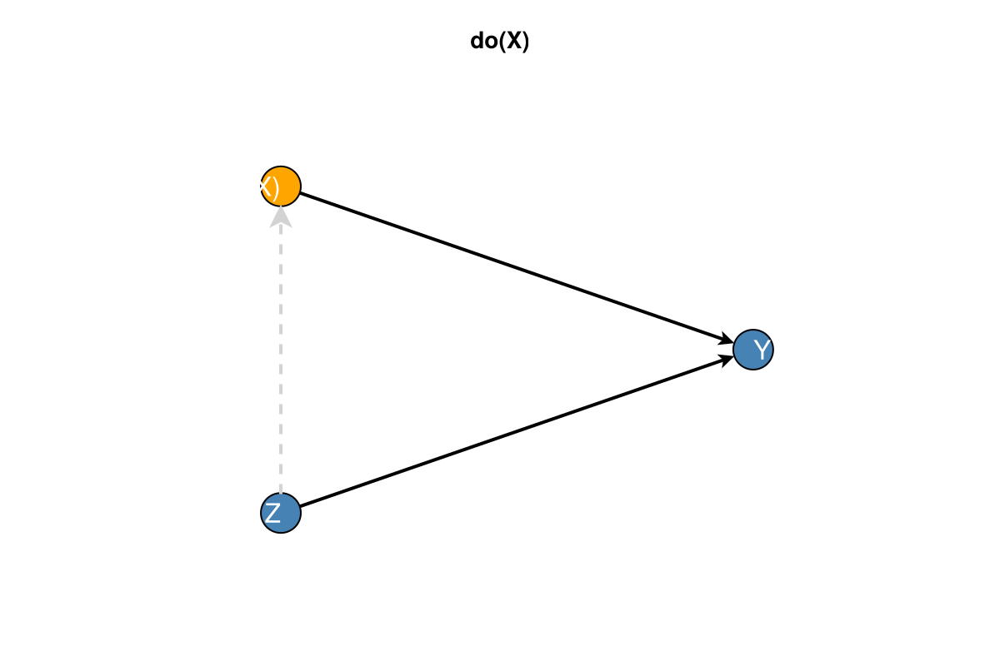
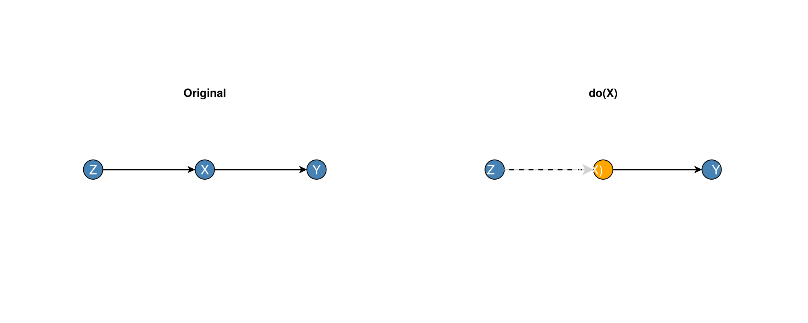
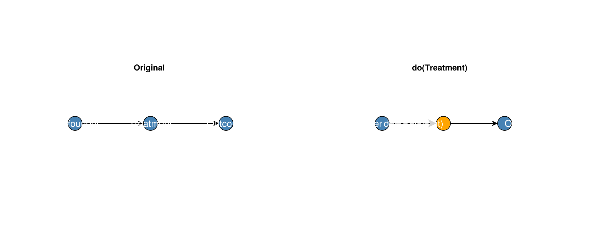

Interventions
DAGMakie supports Pearl's do-calculus operations and intervention visualisation.
using Graphs, DAGMakie, CairoMakie
g, labels = confounding_graph(["Z", "X", "Y"])Graph Surgery
The do(X) operator removes all incoming edges to the intervention target:
# Perform graph surgery: do(X)
g_do = do_surgery(g, 2)
# Original: Z → X → Y, Z → Y
# After do(X): X → Y, Z → Y (Z → X removed)
println("Edges before: ", collect(edges(g)))
println("Edges after: ", collect(edges(g_do)))Edges before: Graphs.SimpleGraphs.SimpleEdge{Int64}[Edge 1 => 2, Edge 1 => 3, Edge 2 => 3]
Edges after: Graphs.SimpleGraphs.SimpleEdge{Int64}[Edge 1 => 3, Edge 2 => 3]Multiple Interventions
# Intervene on multiple nodes
g_do = do_surgery(g, [1, 2]) # do(Z, X)Intervention Visualisation
Basic Intervention Plot
# Show intervention (removed edges displayed as dashed)
int = Intervention(2; label="do(X)")
fig, ax, p = dagplot_intervention(g, int, nlabels=labels)
fig
Convenience Function
fig, ax, p = dagplot_do(g, 2, nlabels=labels)
fig
Comparison View
Side-by-side comparison of original and post-intervention graphs:
fig = dagplot_do_comparison(g, 2, nlabels=labels)
fig
The Intervention Type
# Create an intervention specification
int = Intervention(
2; # Node to intervene on
label = "do(X=1)", # Display label
value = "1" # Optional: intervention value (string)
)
# Access properties
int.nodes # Target node(s)
int.label # Display label
int.values # Intervention value(s)Causal Effect Identifiability
Check if causal effects are identifiable:
# Is P(Y | do(X)) identifiable via backdoor adjustment?
println(causal_effect_identifiable(g, 2, 3))
# Does intervention remove confounding?
println(intervention_removes_confounding(g, 2, 3))true
trueIdentifying Confounders
# Find variables that confound the X → Y relationship
confounders = identify_confounders(g, 2, 3)
println([labels[i] for i in confounders])["Z"]Causal Queries
The CausalQuery type represents causal effect queries:
# Create a causal query: P(Y | do(X))
query = CausalQuery(2, 3; intervention = Intervention(2; label = "do(X)"))
# Check if query is identifiable
println(query_identifiable(g, query))
# Format as string
str = query_to_string(query, labels)
println(str)true
P(Y | do(X))Formatting Intervention Labels
# Single intervention label
println(intervention_label("X"))
println(intervention_label("X"; value = "1"))
# Update node labels to show do(·) notation
println(format_intervention_labels(labels, Intervention(2; label = "do(X)")))do(X)
do(X=1)
["Z", "do(X)", "Y"]Complete Workflow Example
# Create confounded graph
g2, labels2 = confounding_graph(["Confounder", "Treatment", "Outcome"])
# Check identifiability
if causal_effect_identifiable(g2, 2, 3)
println("Effect is identifiable!")
# Find adjustment set
adj = find_minimal_adjustment_set(g2, 2, 3)
println("Adjust for: ", [labels2[i] for i in adj])
# Visualise
fig = dagplot_do_comparison(g2, 2, nlabels=labels2)
else
println("Effect is NOT identifiable via backdoor adjustment")
# Show the confounding
confounders = identify_confounders(g2, 2, 3)
println("Confounders: ", [labels2[i] for i in confounders])
fig = Figure()
end
fig